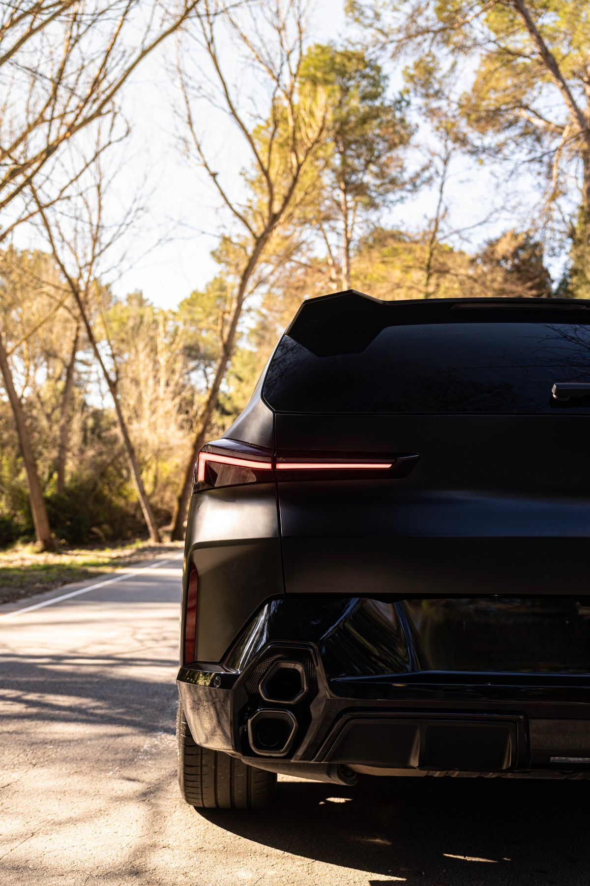
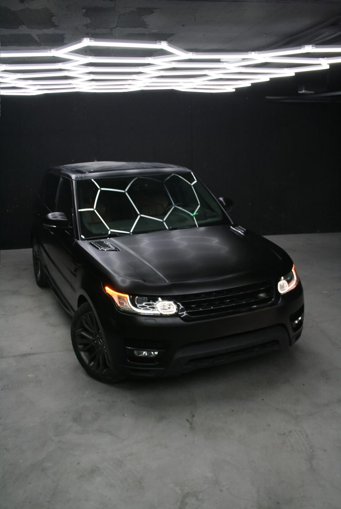

Window Tint in Boca Raton Ceramic window tint, cut to your car, in Florida-legal VLT options
| Service | What it covers | Price |
|---|---|---|
| Full Car — Ceramic Film | All side windows + rear glass, ceramic IR-rejecting filmFL-legal VLT options | from $500 |
Pending verification We have not yet confirmed the figures below against Florida statute 316.2953–316.2956. Treat this table as orientation, not as legal advice, and check the current statute before you commit to a shade — the law is what gets enforced at the roadside, not this page.
We will not knowingly fit a tint we believe is outside the limit for your vehicle. If you want darker than the law allows, the route is the state medical exemption, not a quiet install.
| Window | Sedans | SUV / van |
|---|---|---|
| Front side windows | ≥ 28% VLT | ≥ 28% VLT |
| Back side windows | ≥ 15% VLT | ≥ 6% VLT |
| Rear window | ≥ 15% VLT | ≥ 6% VLT |
| Windshield | Non-reflective film above the AS-1 line only | Non-reflective film above the AS-1 line only |
Florida is a heat problem
before it is a style one.
A dyed film only makes the glass darker. A ceramic film changes what gets through it.

Infrared heat
Most of what you feel as heat through a window is infrared, not visible light. Ceramic film rejects infrared in the film itself, which is why it can cool a cabin without being dark. That decoupling is the entire argument for ceramic in a state where the legal shade is capped.
Ultraviolet
UV is what cracks a dashboard top, bleaches a black headliner and dries leather until it splits. Ceramic film blocks ultraviolet across every window it covers, so the interior ages at the rate of a garaged car instead of a parked-outside one.
Glare
Low sun coming off the Intracoastal in the afternoon, and headlights on the ride home, are a squinting problem long before they are a comfort one. Cutting visible glare is the part of a tint you notice on day one.
No metal, no interference
Ceramic film carries no metallic layer, so it does not sit between your antenna and the world. GPS, cell signal, keyless entry, tyre-pressure sensors and a toll transponder all behave exactly as they did before the film went on.
Four steps.
No shortcuts.
The difference between a tint that lasts and one that bubbles is almost entirely in the prep.
Shade & pattern
We agree your VLT against the Florida limits for your body style, then plot every window from the pattern for your exact model and cut the film off the car.
Glass prep
Windows are dropped, stripped, scrubbed and clayed. Every fibre and speck left behind is a permanent bump under the film, so this is the slow part on purpose.
Heat-shrink & fit
Curved glass needs the film shrunk to the exact shape of the panel before it goes in. Then it is tucked behind the seals, not trimmed short at the edge.
Cure & hand-back
The film has to bond to the glass before a window moves. We tell you the exact window to leave them up for, and what the normal haze looks like while it dries out.
Before you book.
Price, the law, why ceramic, and what happens in the days after.
How much is window tint in Boca Raton?
A full car in ceramic film is from $500 — every side window plus the rear glass. “From” pricing = real price for a standard sedan in good condition — no bait pricing. Prices exclude FL sales tax.
What tint is legal in Florida?
On a sedan the front side windows have to let at least 28% of light through, and the back sides and rear window at least 15%. On an SUV or van the front sides are the same 28%, while the back sides and rear window can go down to 6%. The windshield takes non-reflective film above the AS-1 line only, and a state medical exemption exists for drivers who need darker. We have not yet verified these figures against the current Florida statute, so confirm the law before you choose a shade.
Is ceramic film worth it over a cheap dyed tint?
Ceramic film rejects infrared — the part of sunlight you feel as heat — without having to be darker, and it carries no metal, so GPS, cell signal and a toll transponder are unaffected. A dyed film only darkens the glass, and it fades. That is why the one tint we fit is ceramic.
When can I roll the windows down after a tint?
Not straight away. The film has to bond to the glass first, and moving a window before it has set can lift an edge. We give you the exact window at hand-back. Light haze or small pockets of moisture while it cures are normal and clear on their own. Manufacturer film warranty (up to 10 years) + 1-year Serres installation warranty.
Tell us the car.
We will tell you the tint.
Make, model and year decide the pattern and the glass count. Send those and the shade you have in mind.
What decides your price
Send the make, model and year and we can price it properly instead of guessing. If the shade you want is not legal on your body style, we will say so before you book — that conversation is free and it is quicker than a ticket.
- Prices exclude FL sales tax.
- “From” pricing = real price for a standard sedan in good condition — no bait pricing.
- Manufacturer film warranty (up to 10 years) + 1-year Serres installation warranty.
- Booking secured with a 30% deposit.
Get an exact quote in 2 hours
Send your make & model — exact quote within 2 hours.